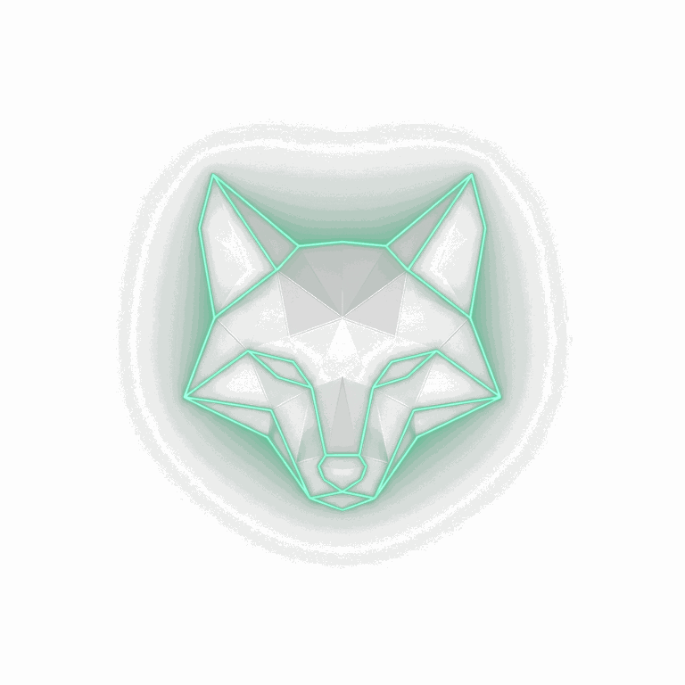
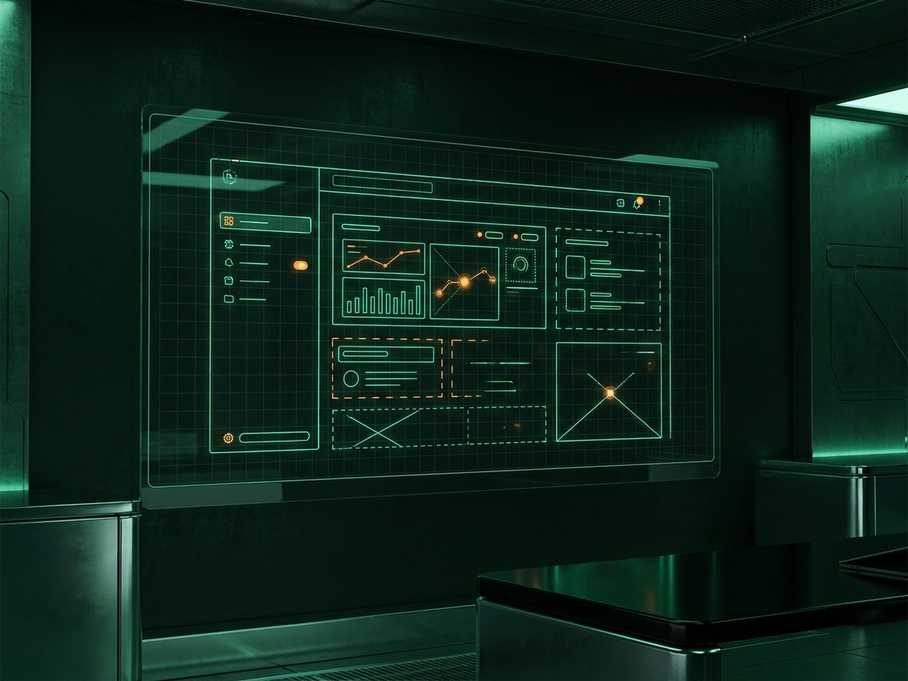

01
Kendi sunucunuzda
Veri yerelliği bizim için bir özellik değil, ilke. Mümkün olan her çözümü, veri sahibinde kalacak biçimde kurarız. Grande AI'ı da buluta değil, kurumun kendi sunucusuna göre geliştiriyoruz.
Usari; size özel uygulamalar geliştiren, kurumsal web siteleri kuran ve seçtiğiniz seste konuşan yapay zekâ telefon sekreterleri kuran bir yazılım şirketidir. Aynı zamanda amiral gemisi projemiz Grande AI'ı — öğretmenler için kendi sunucusunda çalışacak yapay zekâ asistanını — geliştiriyoruz.
İşinize özel mobil ya da masaüstü uygulamayı fikirden yayına kadar birlikte geliştiririz. İşinizi hazır bir kalıba sığdırmayız; akışınıza, kullanıcınıza ve hedefinize göre tasarlanmış bir ürün teslim ederiz.
Kurumunuzu doğru anlatan, hızlı ve çok dilli web siteleri kurarız. Tanıtım sayfasından kurumsal siteye; içerik yapısını, tasarımı ve teknik kurulumu tek elden yürütürüz.
Telefonunuzu, sizin seçtiğiniz seste konuşan bir yapay zekâ asistanı karşılar: aramaları yanıtlar, mesaj alır, randevu düzenler. Sesin tonunu ve konuşma tarzını birlikte belirleriz; asistan, işletmenizi tam istediğiniz gibi temsil eder — siz meşgulken ya da mesai dışında bile telefonunuz yanıtsız kalmaz.

Öğretmenin yanında, kendi sunucunuzda çalışacak yapay zekâ.
Grande AI, Usari'nin geliştirmekte olduğu amiral gemisi proje: öğretmenin hazırlık yükünü azaltacak araçlarla öğrencinin kendi başına çalışmasını destekleyecek araçları bir arada sunmayı hedefliyoruz. Tamamını kendi sunucunuzda çalışacak, kişiselleştirilebilir ve çok dilli olacak biçimde tasarlıyoruz.

Veri yerelliği bizim için bir özellik değil, ilke. Mümkün olan her çözümü, veri sahibinde kalacak biçimde kurarız. Grande AI'ı da buluta değil, kurumun kendi sunucusuna göre geliştiriyoruz.
İşlem başına sayaç işleten modelleri sevmiyoruz. Grande AI'ı, bir sınav da üretseniz yirmi sınav da üretseniz ek maliyet doğurmayacak biçimde tasarlıyoruz.
Çok dillilik sonradan eklenen bir özellik değil, baştan verilen bir karar. Grande AI, Türkçe, İngilizce, İspanyolca ve Fransızcayı birlikte destekleyecek.
Hazır kalıp satmayız. Müşteri projelerinde de Grande AI'da da işe ihtiyacı dinleyerek başlar, çözümü ona göre biçimlendiririz.
Bir uygulama, web sitesi ya da telefon sekreteri için görüşmek isterseniz bize yazın. Grande AI'daki gelişmelerden haberdar olmak içinse bir e-posta yeter.